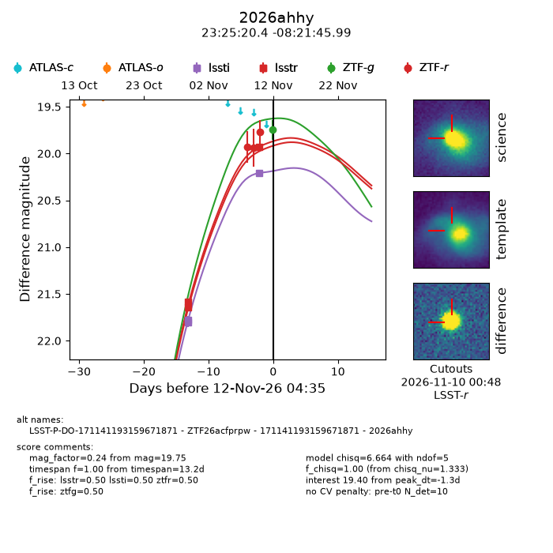
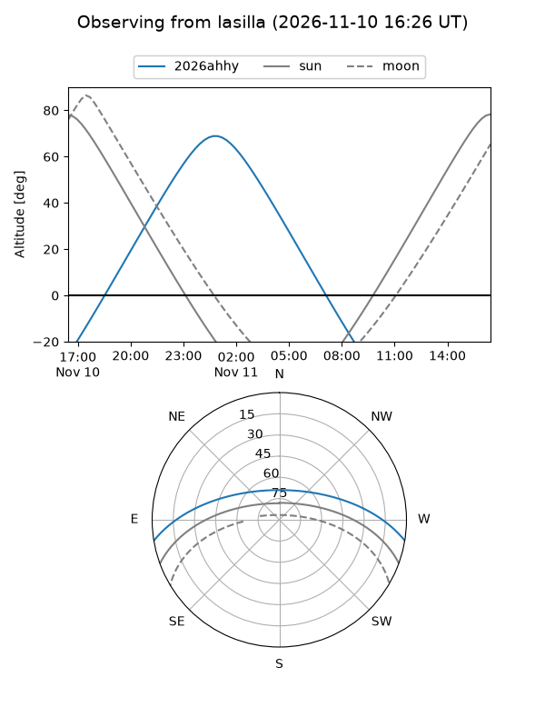
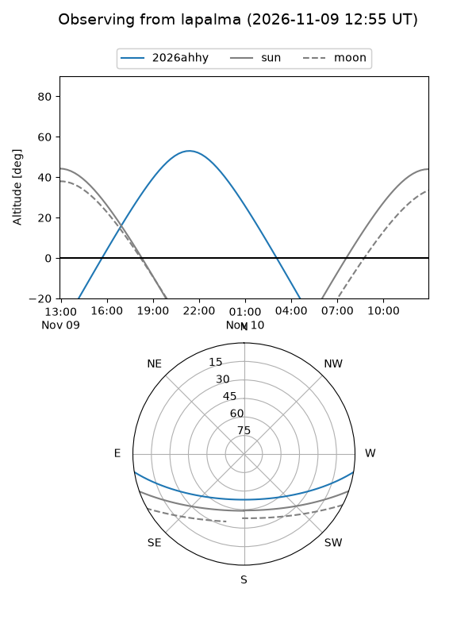
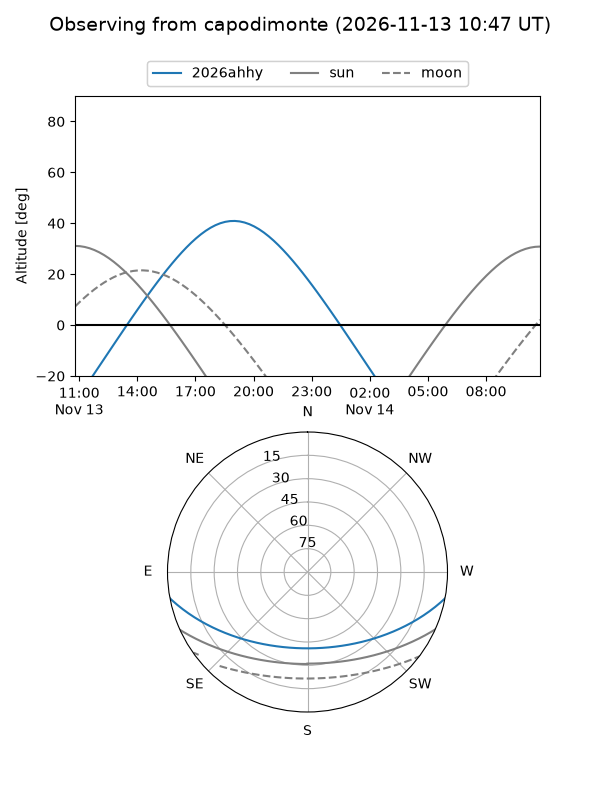
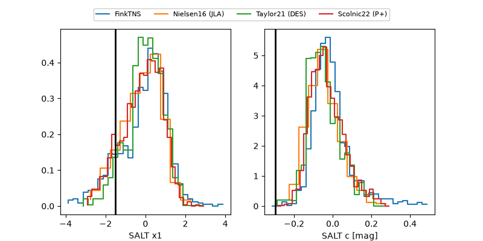

2026ahhy
Target 2026ahhy at 2026-11-12 04:37
Aliases and brokers:
FINK-LSST: lsst.fink-portal.org/171141193159671871
Lasair-LSST: lasair.lsst.ac.uk/objects/171141193159671871
ALeRCE-LSST: lsst.alerce.online/object/171141193159671871?survey=lsst
FINK-ZTF: ztf.fink-portal.org/ZTF26acfprpw
Lasair-ZTF: lasair-ztf.lsst.ac.uk/objects/ZTF26acfprpw
ALeRCE-ZTF: alerce.online/object/ZTF26acfprpw
YSE-PZ: ziggy.ucolick.org/yse/transient_detail/2026ahhy
TNS name: wis-tns.org/object/2026ahhy
Direct TNS query: direct search
alt names
ZTF26acfprpw (ztf,fink_ztf)
2026ahhy (tns,yse)
LSST-P-DO-171141193159671871 (iau_lsst)
171141193159671871 (broker_lsst,fink_lsst)
Coordinates:
equatorial (ra, dec) = 351.3352,-8.36278
equatorial (HMS+DMS) = 23:25:20.44,-08:21:45.99
galactic (l, b) = (71.5761,-62.30537)
Flags:
peak dt: -1.3
Photometry:
last lssti=20.21, lsstr=19.93, ztfg=19.75, ztfr=19.77
3 lssti, 3 lsstr, 1 ztfg, 3 ztfr detections
Lightcurve

Visibility



Additional plots
